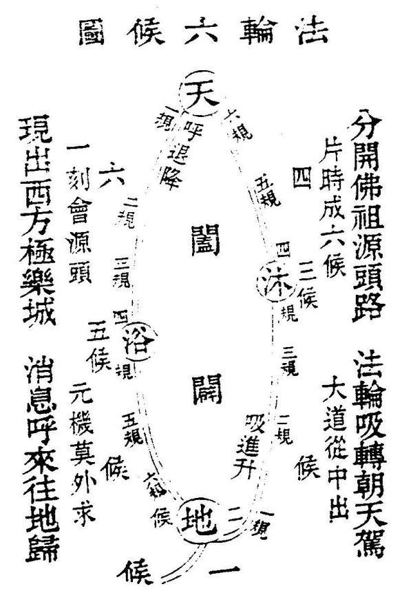

慧 命 经
法 轮 六 候 图 第 二

且道之妙用，莫如法轮，运行不，莫如道路，迟速不等，莫如规则，数不差，莫如候法。是图也，大备法全，而西来真面目，无不在此矣。且其中之玄妙行持，莫如呼吸，息往来，莫如阖辟，不外道路，莫如真意，有所起止，莫如界地。舍己从人，备著此图，全泄天机。愚夫俗人得之，亦无不成也。苟无其德，纵有所遇?天必不附其道。何也，德之于道，如鸟之羽翰，缺一无所用也。必需忠孝仁义五戒全净，然后有所望焉。而其中精微奥妙，尽在慧命经中，两，参看，无不得其真矣。
上一页 返回目录 下一页